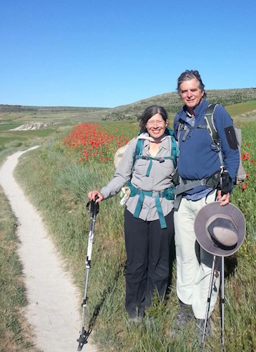

I have lived in Huntsville continuously since 1980. I was 25 years old when I moved here from Houston with my wife, Judy, and our 2-year old daughter, Erin. We were looking for a small town where we could be close to the country, enjoy community, and raise our family. Huntsville is that town we were looking for. In the intervening 36 years we had three more children James, Rachel, and Johanna, all are proud to call Huntsville home.
I moved here as a branch manager for a regional wholesale electrical distributor. That company went out of business during the recession of the mid 1980’s. I learned humility from that experience and the determination to move forward. I decided to make a career change and returned to school attending SHSU for four semesters to become an accountant. Although difficult to start over in my mid-30’s it is a change I’ve never regretted.
In those early years in Huntsville several people in the community reached out to me and took a personal interest in my life and family. They patiently mentored and evangelized me to a personal relationship with Jesus Christ. That relationship has become an essential part of my being and is the counsel I seek in making decisions.
After passing the CPA examination I began working for the Texas Department of Criminal Justice in the Internal Audit Division. Internal Audit is an independent, objective activity that is designed to add value and improve an organization’s operations. The Internal Audit Division was independent because it was outside the TDCJ organizational umbrella, reporting directly to the Board of Criminal Justice.
I worked for the TDCJ over 25-years and gained experiences in management, finance, and in broad range of the TDCJ’s activities, such as facilities maintenance, health services, industrial operations, agribusiness, and other programs. I retired from the TDCJ in December 2014 as Director of the Internal Audit Division.
One of my great blessings after retirement was the opportunity to travel to Spain and walk the Camino de Santiago. This is a 500-mile pilgrimage from France across northern Spain. It offered my wife and me the opportunity to meet people from all over the world and walk through areas that have been settled since Roman times. Experiencing that history helped provide me with an optimistic vision for the future. As a city leader we need to project how our decisions today will impact the Huntsville of 50 years from now and not forsake the future for selfish, short-range gain.
My Family, four generations of Texans.